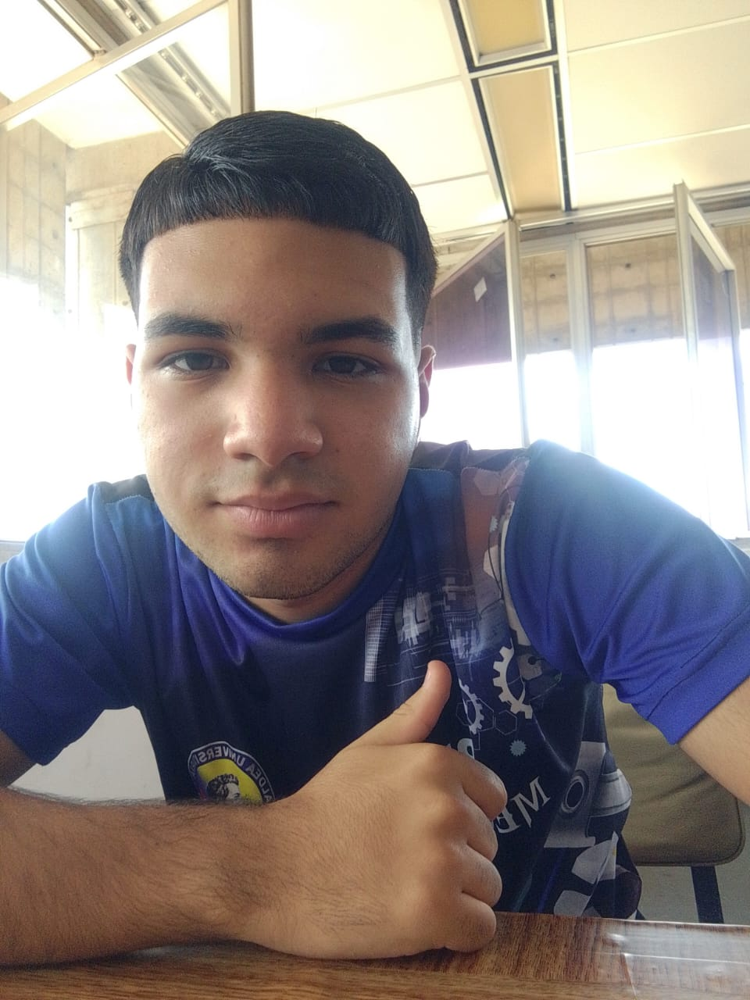

Desarrollo web | Tecnología | Aprendizaje constante
Soy Genaro, estudiante de la carrera de Informática y actualmente curso el segundo semestre. Me interesa el desarrollo web, la programación y la resolución de problemas. Me considero una persona curiosa, responsable y con muchas ganas de seguir creciendo en el mundo de la tecnología.